Introduction to myself
My name is Qi Sun. I am now a MSI first year student, majoring in Data Analytics.
I was born in Shanghai and also grew up there. I have witnessed the tremendous change of this city, at the same time, this city has witnessed my growing from a primary student to a undergraduate. I love this city, ranging from its local dishes to the significant view of the Bund.
 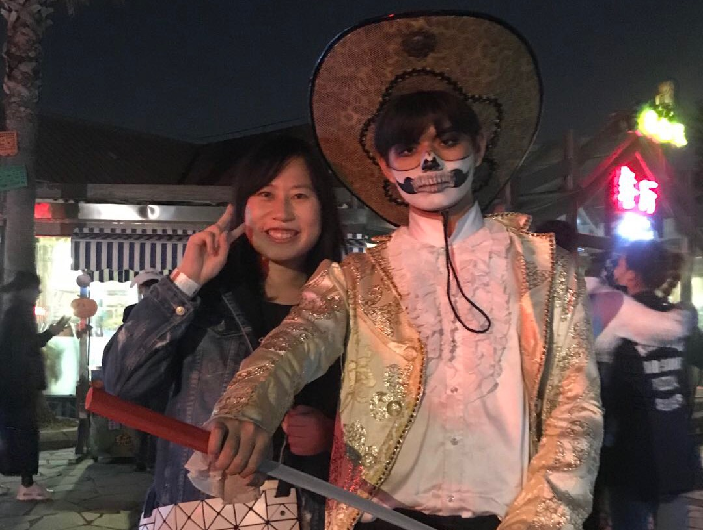
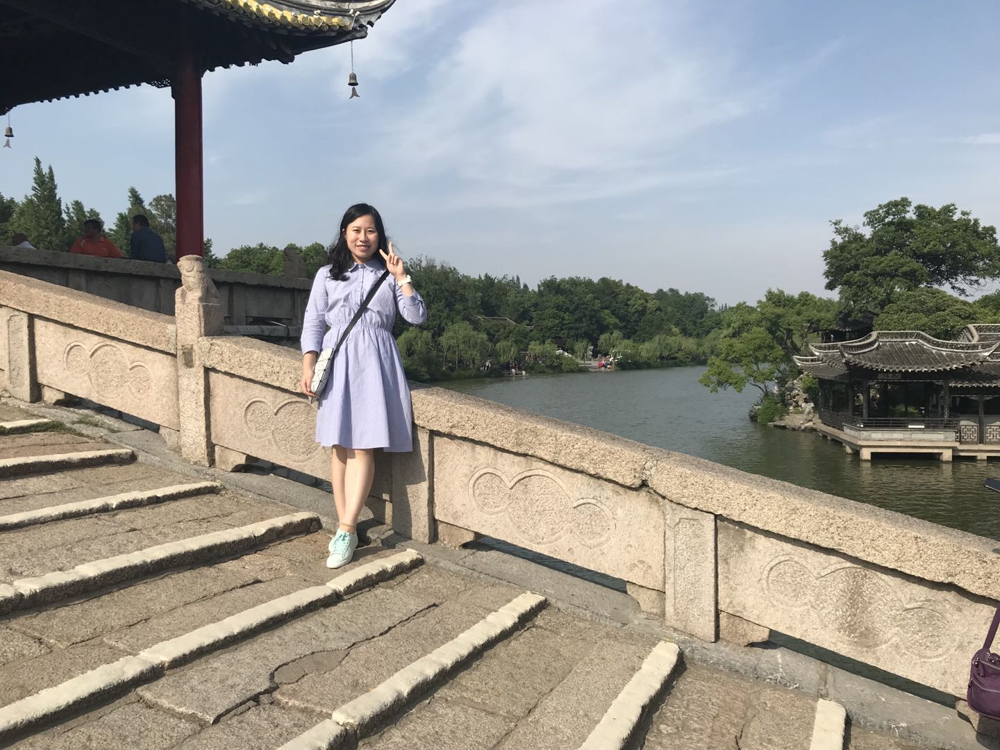
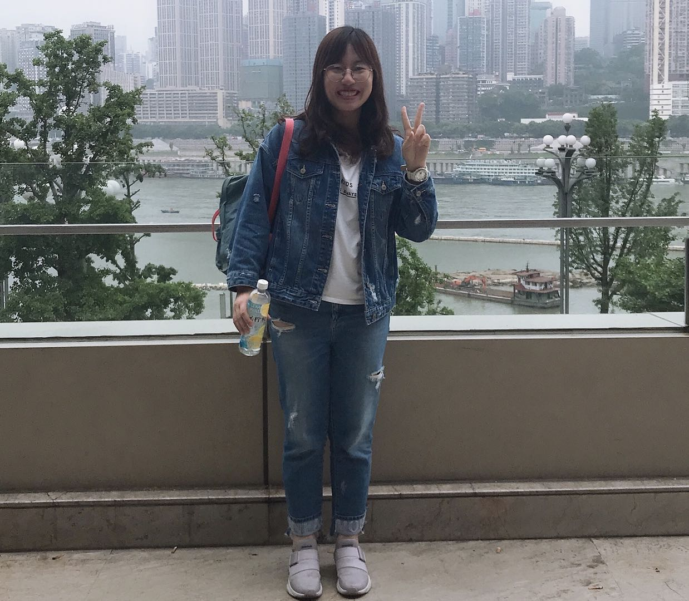
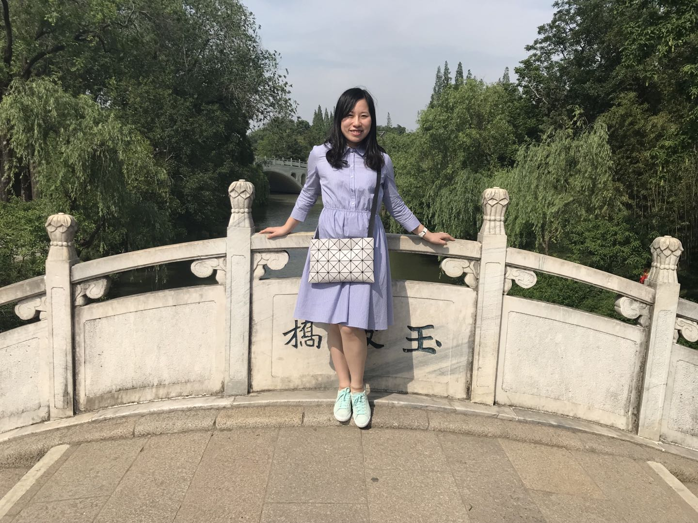
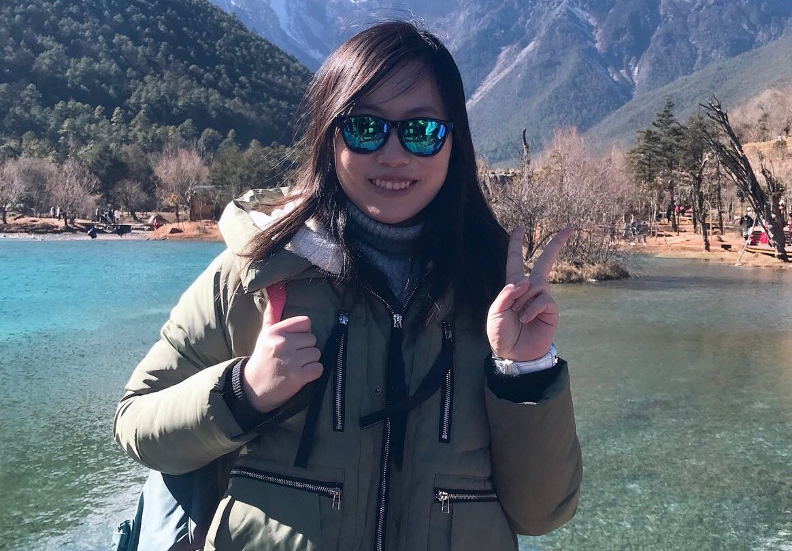
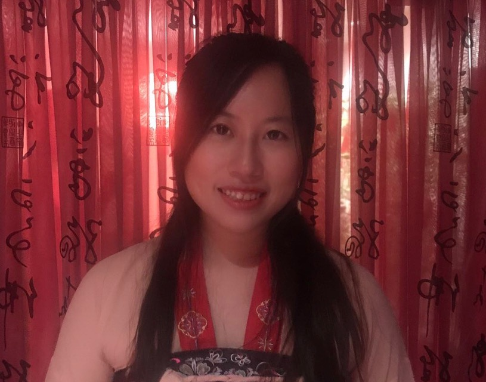
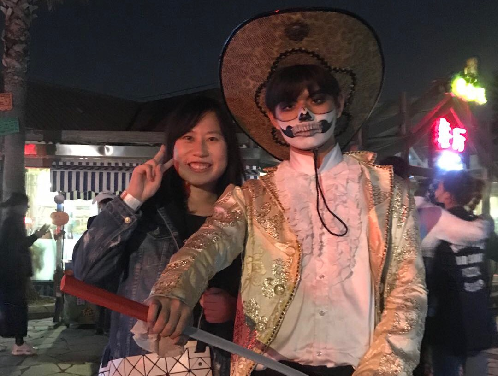
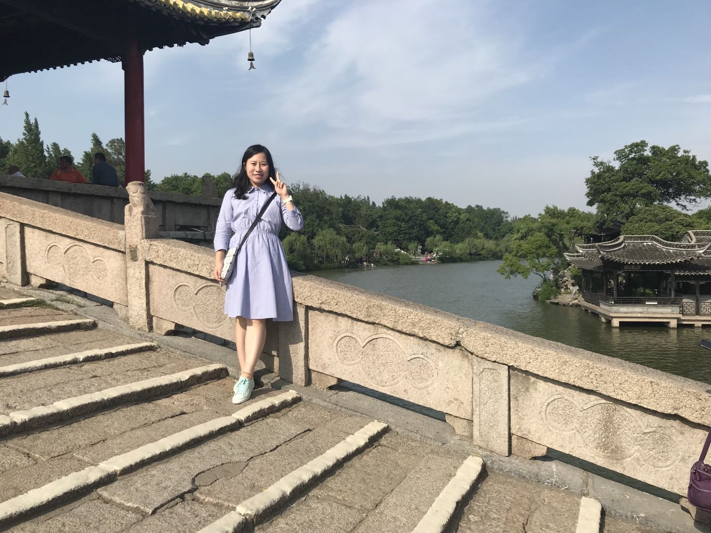
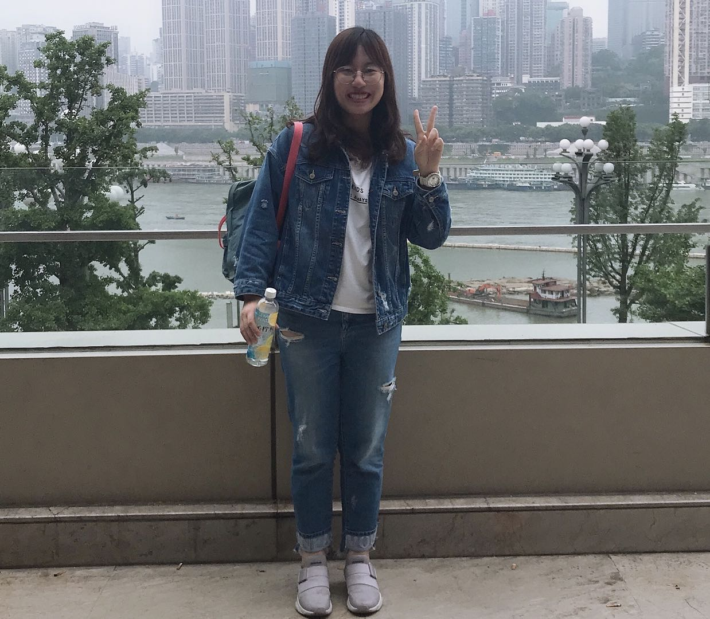
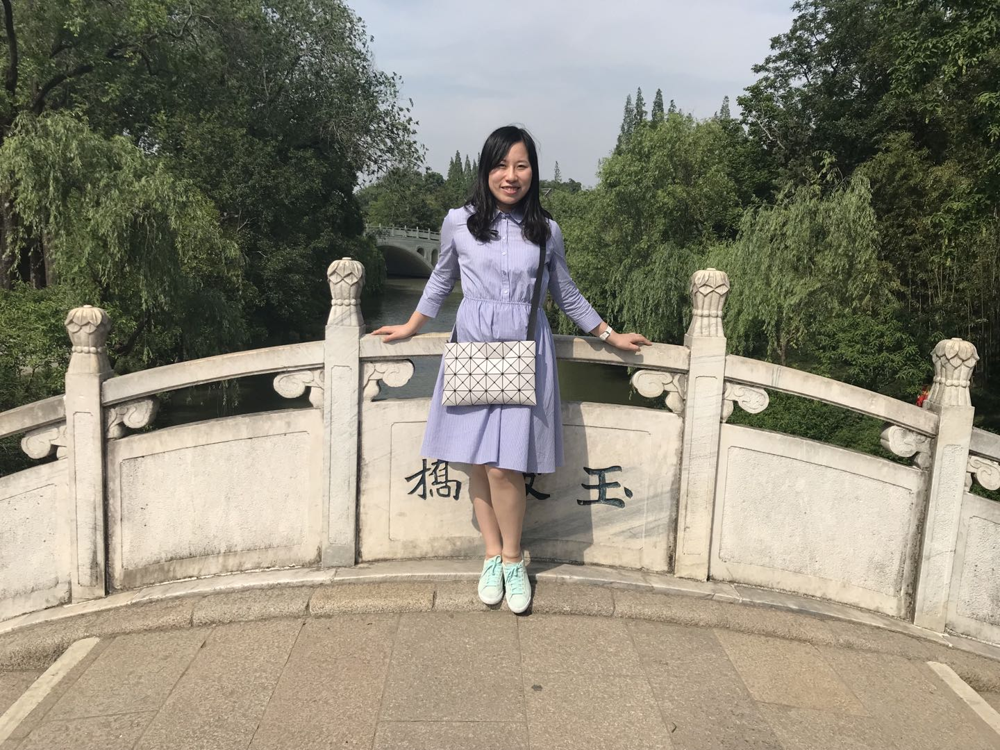
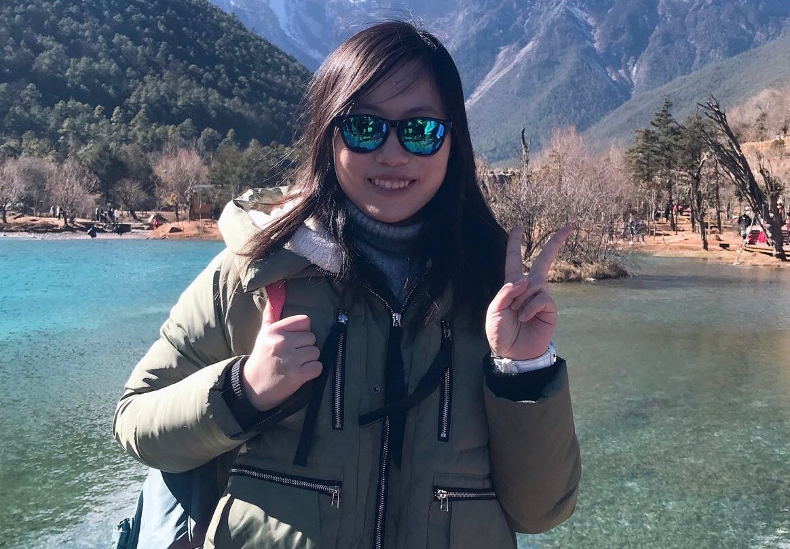
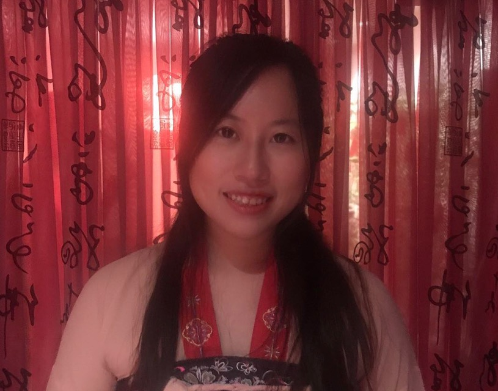
After my college-entrance examination, I entered Shanghai JiaoTong Universiity and stayed there for four years as an undergraduate. My institute is University of Michigan-Shanghai Jiaotong University Joint Institute. My undergraduate major is electrical and computer engineering. Thanks to my undergraduate univerisity and institute, I have learned much about programming, circuit, computer, but most importantly, how to collaborate with others to complete a big project. It is also these four years inspiring me to apply for a master program in the University of Michigan.